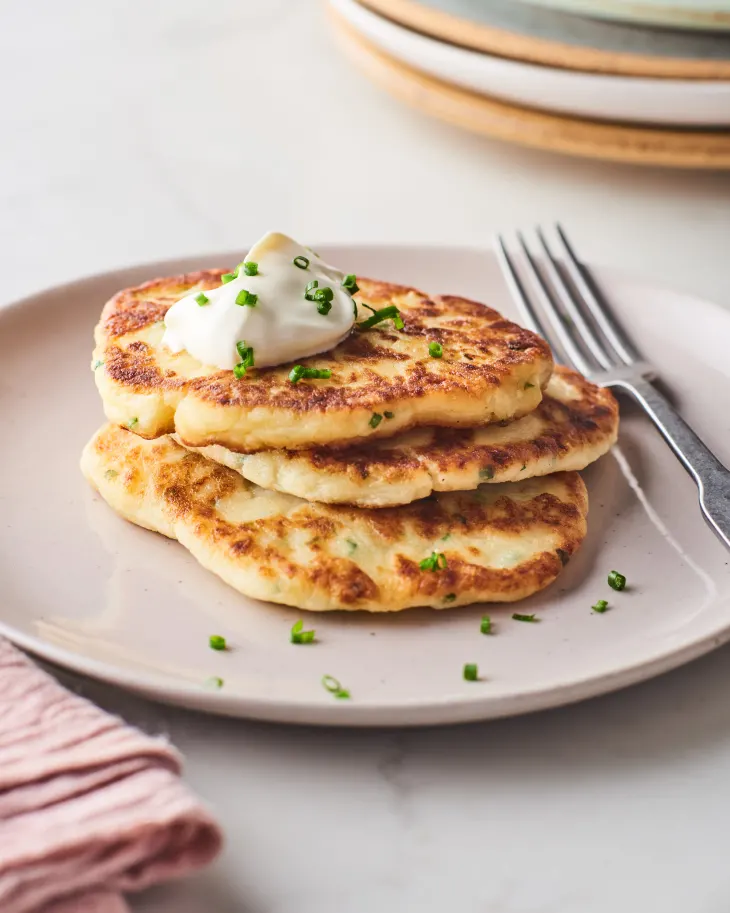

Potato pancakes

Description
Because who doesn't love potatoes? Or pancakes!
Ingredients
- potatoes
- onion
- egg
- salt and pepper
- flour
- vegetable oil
Steps
- Grate the potatoes and the onion.
- In a large bowl, mix the potatoes and onion with an egg, some flour and salt and pepper to taste.
- The mix should not be too watery.
- On a frying pan, heat up some oil.
- Using a spoon, form small pancakes on the pan.
- Once golden brown, serve the pancakes with some cream and sugar.
Return to main page